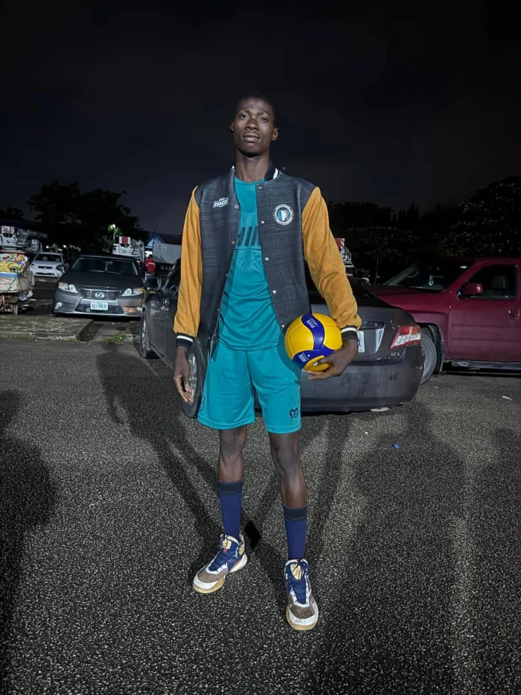

Emmanuel Edahe Alexander
About Me
Hello!My name is Emmanuel Edache Alexander, and I am a Nigerian student at BYU-Idaho, studying Web Development online. Learning and practicing web development has been a challenge for me because I do not yet have a good computer, which makes it harder to complete my assignments and projects. Even with this struggle, I am determined to keep learning and improving my skills. My zeal for technology and my desire to grow in this field keep me motivated, and I believe that with persistence and faith, I can overcome these obstacles and achieve my goals..
My Hobbies
I find great joy in volleyball and teaching, two passions that might seem different but actually complement each other well. Volleyball challenges me physically and mentally—it teaches teamwork, strategy, quick decision-making, and the discipline to keep improving with every game. Teaching, on the other hand, allows me to share knowledge, inspire others, and build confidence in those I guide. Both hobbies push me to connect with people, communicate clearly, and grow as a leader. Whether I am on the court or in a learning environment, I feel energized, purposeful, and motivated to become the best version of myself while helping others do the same..